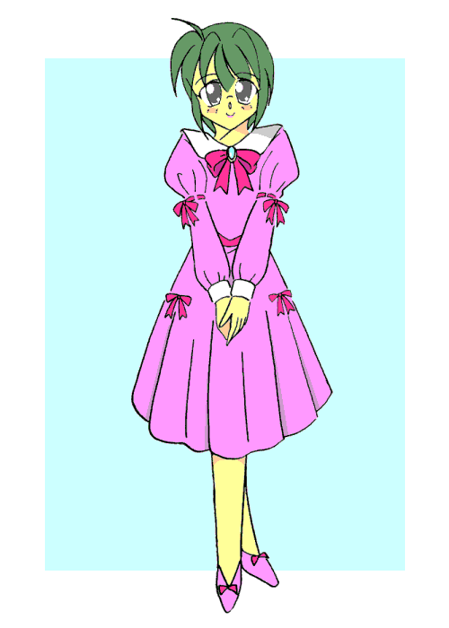
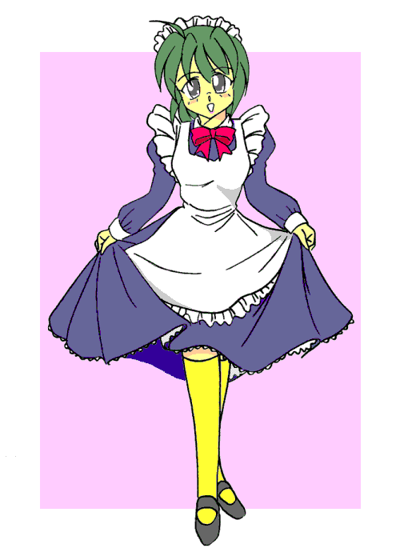

「……以上で、今回の学習合宿を終了する。それでは、解散」
わいわい、がやがや。
みんな各々の家路へと散ってゆく。
「ふぅ……」
僕は溜息をついていた。
つい先日のことだ。
とある少女から買ったボディソープのせいで、僕こと桐生凛は女の子になってしまった。
おかげで色々な人に話し掛けられたり、着替えや入浴を覗かれたり、恥ずかしいいいたずらされたり……。
無論、それは僕の乗った合宿帰りのバスの中でもあった。
突然後ろから胸を揉まれたりなんて茶飯事だった……（ぐすん）。
でもまぁ、無事？元の場所にたどり着けただけでもよかったかな。
「じゃぁな、凛」
「うん、またね、亮輝」
そうして親友と別れ、僕は踵を返し商店街へと向かった。
目指すはあの薬屋”帝枝須”。
僕にあのボディソープを売りつけた少女が経営している店へ——。
「嘘……」
僕は愕然として立ち尽くした。
更地。
あの薬屋があったはずのそこには、何もなかった。
それどころか、そこに建物があった形跡すらないのだ。
「そ──んな──」
がくりと膝をつく僕の横を、一人の中年男性が通っていく。
「す、すみません！」
「え？」
僕はそのおじさんを呼び止めた。
「おじさん、この辺に住む方ですか？」
「あ、ああ。そうだよ」
「だったら、あの、ここにあった薬屋さんって、どこに行ったかご存知ありませんか？」
この商店街近辺に住んでいらっしゃるのなら、ここのことも知っているはずだし、ともすればどこに移ったかも判るかもしれない。
そうふんだ僕だったが、おじさんは怪訝な顔をして驚愕すべき言葉を発した。
「お嬢ちゃん、何を言ってるんだい？ここは元々空き地で、10年以上前から店なんか一軒も建っていないよ」
「え──」
信じ、られない。
ここには元々、”何も建っていなかった”……？
そんな馬鹿な！？
では、あの店は—─あの子は何だったんだ？
夢幻だとでも言うのか。
──否だ。
その証拠に、僕は女になってしまっている。
それは確固たる事実であり、認めたくない現実。
「──」
めまいがして、僕は膝をつく。
「……だ、大丈夫かい、お嬢ちゃん……？」
おじさんが心配そうに言う。
「……はい。大丈夫です。大丈夫……」
そう言って僕は立ち上がり、フラフラとおぼつかない足取りでその場を去った。
「あ」
どん底に落とされた気分で家路について。
僕はあと一つの大きな問題が立ちふさがっているのに気がついた。
「……明日奈にどう説明しよう」
明日奈とは、僕の妹だ。
普段両親は家にいないから、いつも家には僕と明日奈しかいない。
両親ともに大きな会社の社長で、家に帰ることはまずありえなかった。
だから、家にはいつも僕と明日奈の二人だけ。
家事なんかは分担してやっている（料理などは明日奈、僕は洗濯や掃除といった具合に）。
だから、説明するのは専ら明日奈だけでいいんだけど……。
「……どう、説明すればいいんだ？」
普通に帰ってきて、だ。
「ただいまー明日奈。いやー、僕女になっちゃったよ」なんて言える訳が無い。
「うーん……どうしよう……。──そうだ！」
あることを思いつき、僕はおもむろに携帯を取り出す。
そして押しなれた番号を押して、彼にかけた。
「──あ、もしもし。亮輝？ 凛だけど。ちょっと、いいかな？……」
「着いた……」
亮輝と合流し、僕は自分の家の前に来ていた。
家は、流石両親とも大会社の社長、ラージというよりヒュージな大きさだ。
しかし、住んでいるのは僕と明日奈、たった二人。
小さい頃はメイドさんとかいたんだけどな……。
「さ、入ろうぜ」
「う——」
促す亮輝に、しかし僕は躊躇ってしまう。
亮輝は溜息をついて言った。
「……おいおい、今更になって怖気づいてんのか？ お前の家はここしかねぇんだ。いいかげん覚悟を決めろって」
「うう……そうは言ってもなぁ……」
やっぱり、決心がつかない。
嗚呼、なんて僕は優柔不断なんだろう……。
「──ええい、ままよっ！」
なんて僕は決心して玄関に近づき、
ピンポーン♪
チャイムを押した。
「お……お前なぁ……」
亮輝はこめかみを抑える格好をしてうめいた。
「だってだって！」
これが今の僕の限界なんだっ！
そう言おうとした瞬間。
ガチャ。
「〜〜〜〜〜〜〜！！」
僕はとっさに亮輝の後ろに隠れる。
「はーい、どなたでしょ」
やたらと元気な声をして、栗色のポニーテールを揺らして現れたのは、そう、僕の妹・「桐生明日奈（きりゅうあすな）」だった。
大きな浅葱色の瞳に長いまつ毛、中学生にしてはやや発達した身体で、身長は今や僕よりも高い（泣）。
明日奈は、白いTシャツにジーパンという姿で玄関から出てきていた。
「あら、美作先輩！お久しぶりです〜♪」
亮輝をみるなり、明日奈は猫なで声で近づいてきた。
……うわわわわわ、どうしよう！？
「おっす、久しぶり。いつも可愛いね明日奈ちゃんは」
なんて、亮輝は口説くかのように言った。
……仮にも親友の妹だということを忘れないでいて欲しい……。
「まぁ、そんなこと言って……あら？」
う゛。
明日奈は、後ろに隠れている僕に気付いてしまった。
「先輩……その、後ろにおられる方はどなたでしょうか？」
ああああっ、やっぱりバレてる！！
「んっと、まぁ、あれだ。──明日奈ちゃん、驚かないで聞いて欲しい」
そう言って亮輝は一旦言葉を切る。
そして、
「こいつは、お前の兄さんだよ」
と、何の説明もなく言っちゃった。
「……へ……？」
何を言っているか分からない、と言った感じの明日奈。
当たり前だろうな……。
「亮輝……ストレート過ぎて伝わってないよ……」
「んあ？そっか。んじゃぁまぁ、改めて聞いてくれ、明日奈ちゃん」
「あ——はい」
半ば呆けた顔で返事をする明日奈。
そして改めて亮輝が説明する。
「こいつは凛なんだ。信じられねーことなんだけどな、変なとこで買ったボディソープが原因でこんなになっちまったらしい。今のところ元に戻れるかは分からないが、まぁ、正真正銘お前の兄ちゃん——、いや、姉ちゃんになるのか？ まぁ、そんな所だ」
……あんま説明になってないよ……。
「……」
呆然とする明日奈。
……よっぽど、ショックだったかな……。
と、思っていると。
「知ってますよ」
なんて、笑顔になって明日奈は言った。
『へ……！？』
驚く僕と亮輝。
「昨日、お兄ちゃんの学校から電話があったの。そりゃ、初めは驚いたけど、女の子になったお兄ちゃんってどんなのかなーって思ってたら、なんだか会うの楽しみになっちゃって」
「は……はぁ」
苦笑いを浮かべながら、小声で「本当に変わってるな、お前んとこ」なんて亮輝は言った。
僕も小声で「ほっといてくれ。否定しないけど」と言っておいた。
「ふぅん……こんな風になっちゃったんだぁ」
「うわぁ！？」
いつのまにか僕の顔を明日奈が覗き込んでいた。
「……」
そしておし黙る。
「……？ あ、あの、明日奈？」
僕が恐る恐る声をかけるとそのとたん、
「ごぉかぁぁぁぁく！！」
ぎゅっ！
「わぷっ！」
突然僕を抱きしめる明日奈。
「ん〜、私好みの”姉”になってくれちゃって♪ よぉし、私がとことん可愛くしてあげる！」
「え！？ ちょ、明日奈ってば！ りょ、亮輝〜〜！」
そのままずるずると僕は明日奈に家の中に引きずり込まれていった。
「……案ずるより産むが易しとはこのこった……」
そう、亮輝が言っていたように聞こえた。
「ふむふむ……これは……ちょっと合わないかな……」
「……」
明日奈はクローゼットの中から何かを取り出そうとしていた。
ここは明日奈の部屋。
うちの部屋は一人あたりおよそ4ｍ四方と広い。
おまけにいえば、部屋ひとつひとつにトイレが付いている。
つくづく豪邸だなぁ……。
「……ちゃん、おにーちゃんってば！」
「え——、ああ、ごめん。何？」
さっきから明日奈が呼んでたのに気がつかなかった。
「何ボーッとしてんのよ」
「ごめんごめん……あれ、それは？」
僕は、明日奈が持っていた沢山の服をみて聞いた。
……嫌な予感がする。
「ん、これはお兄ちゃんに着てもらうのだっ」
「……え！？」
僕は硬直した。
今、コノ妹ハ何ト言ッタ？
「着てもらうって……それを？ 僕に？」
「私に兄は一人しかいないわよ」
平然と言う明日奈。
「ね、どれがいい？」
そう言って明日奈は僕にいくつかのセットを渡してきた。
「な、なんで僕が着なきゃ！？」
思わず叫ぶ。
「なーに言ってんのよ。お兄ちゃんの服、今の状態じゃ前のは全然サイズ合いそうに無いじゃん。それに、男装するつもり？」
「う……」
確かに、今は女の子になっているから、明日奈の言うことはもっともだろう。
でもなぁ……。
「……仕方ないか」
僕は溜息をつき、手渡された服を見ていく。
まず一着目。
いかにも女の子然とした、ピンクのワンピース。
フリフリこそないものの、リボンがところどころにあしらわれていてとても可愛らしい。
……こんなの持ってたのか、妹よ。

いらすとれいてっど：MONDO様
「これは流石になぁ……」
「そぉ？ 私はいい感じだと思うんだけどな」
少し不満げに片付ける明日奈。
二着目。
「こ……これわ！？」
僕は驚愕した。
紺のエプロンドレス。
頭飾りに白の靴下。
……いや、どう見てもメイドさんなんですけど。

いらすとれいてっど：MONDO様
「こ、これを着ろと……？」
「似合いそうだもん。ま、これは冗談だけどね」
なんて笑いながら、明日奈はそれを片付けた。
そして三着目。
「お……これは」
茶色のキャスケットにジーパン、そしてストライプの長袖シャツ。
ファッショナブルな組み合わせだった。
「これが一番いいかな？」
そう僕は明日奈に言った。
「OK、服はそれで決まりね。——お兄ちゃん、明日も休みでしょ？ だったらちょっと、出かけようよ」
と、明日奈は話を持ちかけてきた。
「え？ 別にいいけど……」
そう僕が答えると、明日奈は少し不敵な笑みを浮かべて言った。
「よぉっし、んじゃ明日は街に出るからね。——途中で逃げちゃ駄目よ？」
「？ 別に逃げたりしないけど、なんで？」
「秘密♪ さぁて、夕食の支度しなきゃ」
そう言って明日奈は自分の部屋を後にした。
「……？ なんだろう？」
僕は何のことやらサッパリだった。
だが、僕は明日が我が恥辱記念日とも言える日になろうとは思う由もなかった……。
——Tommorow——
「いい天気だねー♪」
「そーだね」
本当に、明日奈の言うとおり気持ちの良い晴れ具合だ。
僕達は、街に出かけていた。
無論僕は、昨日明日奈から貰った服を着ている。
けれどもつい、似合ってるんだろうか？ とか、変に見えないだろうか？ とか思ってしまう。
「……ねね、お兄ちゃん」
「——え？」
突然明日奈が耳打ちしてきた。
「周りの人が皆、お兄ちゃん見てるよ♪」
「えっ！？」
僕は吃驚した。
や、やっぱり変なのかな？
「——ちょっと、耳を澄ましてみ」
「え、あ、うん」
明日奈の言うとおり、少し耳を澄ましてみる。
——おい、あの眼鏡の子可愛くね？
——うお、マジだ！ どこのガッコだよ？制服着てねぇ。
——どこかのモデルかな？
——くーっ、イイ！
——何かお悩み事はございませんかぁー？
「……ね？ これ、みぃんなお兄ちゃんにあてられた言葉だよ」
と、囁いてくる明日奈。
一部違う気もするけど、どうやらそうらしい。
「————」
今度は、照れで顔が赤くなる。
まぁとにかく、僕は変には見えないらしい……。
「さ、着いたよお兄ちゃん」
「着いたって……ここは」
僕はその店を見上げる。
かなり大きいビルの一階にあるお店。
うん、それだけなら問題は無いんだ。
けど。
「……ランジェリー専門店ぢゃない？」
引き攣った顔で僕は明日奈に尋ねた。
そう。
明日奈が僕を連れて来た先は。
街でも有名な、やや高級な女性下着専門店だったのだ。
「何を今更いってんのよ。ささ、入りましょっ」
「えっ、わっ、ちょ、ちょっとぉぉぉ」
引き摺られる形で僕は明日奈と一緒にお店に入ることとなった。
「うわ……」
そこはある種桃源郷だった。
見渡す限り、下着。
乙女の純粋を表す白から大人の赤まで色とりどり。
こういう店に入れて嬉しいと言うよりは、かえって恥ずかしい。
「さてと、まずはブラからいきましょーか。お兄ちゃんはどれがいい？」
「どれって……えーと……」
顔が赤いのが自分でも分かる。
どんなのが自分に合うんだろうか……？
いやいや、それ以前に僕ってサイズいくつなんだ？
「サイズが知りたいんだけど……どうすればいいの？」
僕はおずおずと明日奈に尋ねる。
「あ、そっか。まずは知らなきゃね。——ええと、あ、店員さん発見。すみませーん」
「はーい、何でございましょうか」
遠くからこの店の店員さんがやってきた。
「えっと、この娘の3サイズを測っていただきたいんですけどぉ」
「うぇぇぇぇ！？」
す、3サイズ！？
その単語だけで僕はさらに赤面してしまう。
「どったの？」
「あ——、いやなんでも」
怪訝そうな顔している明日奈に慌てて僕は言った。
それにしても……。
まさか3サイズ測るハメになろうとは夢にも思わなかった。
……いや、夢に思っちゃったらまたそれは大変だけれども。
「かしこまりました。では、こちらへどうぞ」
店員のお姉さんに案内されて、僕は更衣室へ行く。
「それじゃ、上着脱いでくださいねー」
「え！？ こ、このままじゃ駄目なんですか！？」
「当たり前ですよ。それじゃ服が邪魔で正確に測れないでしょう？」
う……確かに。
「下着も……ですか？」
恐る恐る聞いてみる。
するとお姉さんは、
「上は脱いでください。下はインナーのままで結構です」
なんて言ってきた。
「え……あ……」
「大丈夫ですよ、女性同士でしょう？ 恥ずかしがらなくていいですから♪」
と、笑顔で言ってくる。
「——っ、わかりましたよぉ……」
僕は諦めて、上着に手をかけた……。
「あ、出てきた。おーい、おにいちゃ……おっと、お姉ちゃ〜ん」
更衣室から出ると、明日奈が近づいてきた。
「どーだった？」
明日奈が問い掛けてくる。
「……」
けれども、僕に答える気力が無かった。
「お、お兄ちゃん？」
「……あ、明日奈。……もう僕お嫁に行けない……」
「お、お嫁て……（汗）」
ああ、ものすごく恥ずかしかった……。
「……何か、大変だったみたいね。——で、どぉだったの？」
「え——どうって？」
「だからサイズだってば！ 何の為に測ってもらったのよ！？」
あ、それもそうだ。
何とも馬鹿なことを僕は……。
「ええと、上から……88・56・86、だったかな」
「——へ？」
明日奈が絶句する。
……な、何か変だったんだろうか？？
「お兄ちゃん……、それ、ほんと？」
「……う、うん。ちゃんと測ってもらったから」
「……」
再び言葉を失う明日奈。
「……あ、明日奈？」
僕は心配になって声をかける。
すると、
「わ……私より胸が……」
なんかぶつぶつと言い始めた。
「え……えっと、明日奈……？」
「な、なんでもないよ！ それよりさ、サイズ分かったんなら早速選ばなきゃ！」
何か引き攣った笑顔で明日奈は言った。
……まぁ、いか。
「そうだね……。あんまり派手なのは駄目だよ」
服からスケるようなのはもってのほかだ。
生徒指導の対象にだけはなりたくない。
この前氷室先輩——中学校のときから一緒の女の先輩なんて、少し大きなリボンでツインテールつくってただけでグラウンドの草むしりやらされてたし。
「ちぇ……。なら、これとこれね」
そう言って明日奈は僕に一組のインナーを手渡した。
色は純白。デザインもシンプルで、至って普通のものだ。
これは勿論OKだ。
けど明日奈、「ちぇ」って……。
「一組だけじゃ全然足りないから……、これとこれと……んー、これもかな。色のバリエーションもないとね」
明日奈はそう言いつつぽいぽいと僕に下着を手渡してゆく。
明日奈も一応考えててくれているみたいで、色とりどりではあるけどもどれも抑えめな色合いである。
「こんなもんかな。じゃ、お兄ちゃん、更衣室いこっか」
「うん……でも、どうやって着ければいいんだ？ 全然わかんないんだけど」
生まれてこのかた、ブラジャーやショーツなんて着用したこと無いからなぁ。
……してたら変態だけど。
「ああ、大丈夫よ。今日は私がつけさせてあげるから」
「えぇ！？」
僕は素っ頓狂な声をあげた。
「つ……つけさせるって、つまり、その」
思わず赤面しながら僕は尋ねる。
「何恥かしがってんのよもう。今はお兄ちゃんも女の子でしょ？ いい加減覚悟を決める！」
と、半ば諭す感じで言う明日奈。
「うう……わ、わかったよ」
「うん、よろしい♪」
そんなこんなで、僕は明日奈とともに更衣室へと向かった。
「んー、今日は楽しかったねっ♪」
……。
「ついでに色々買い物しちゃったし、結構充実した一日になったわ。——って、お兄ちゃん？」
「……胸、お尻……じっと見られた……」
茫然自失とはこのことなんだろう。
僕の何かはすでに崩れ去っていた。
「全く……、そんなんじゃ明日から大変だよ？ 今からそんなのでどうするのよ」
呆れた顔で言う明日奈。
「そ、そうだね……」
確かになぁ。
明日から学校。今日のことなんかよりももっと色々な出来事が待っているんだろうなぁ……。
「……所で明日奈、一つ聞きたいことがあるんだけど」
「ん？ なーに？」
僕は勇気をを振り絞って聞いてみた。
「今日下着の後で買ったその服の山……、どうするの？」
すると、小悪魔は笑顔で答えた。
「勿論、家に帰ったら全部お兄ちゃんに着てもらうのだっ！」
……。
「いやだぁぁぁぁぁぁぁぁぁぁぁ！！」
「あ、コラ！ 待ってよお兄ちゃんっ！」
そうして僕と明日奈は家までの道、ずっと競争することになった。
——ああ、神様。
僕は着せ替え人形にされる運命（さだめ）なんですね……。
あとがき
こんにちは。マコトです。
ようやく書けました、第三話。
しかし、気付けばいつのまにか他の二話より明らかに文字量が多くなってる＾＾；
それはともかく、凛君は明日から学校です。
そういえば、制服はどうするんでしょうね？ｗ
——それは、次回のお楽しみです♪
それでは〜♪